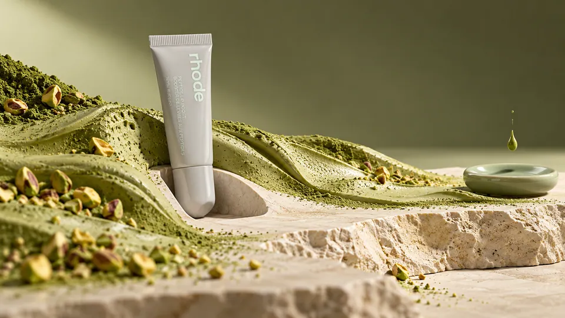
THE ART OF CRAVING
Beauty and patisserie in eight sharply different material worlds.
Beauty · Unofficial brand study
View the seriesCommercial art direction & campaign concepts.
Self-initiated studies for unbranded subjects, fictional identities and existing brands. No client commission or endorsement is implied.
Explore the workEach campaign starts with one visual proposition and follows it through a complete series.

Beauty and patisserie in eight sharply different material worlds.
Beauty · Unofficial brand study
View the series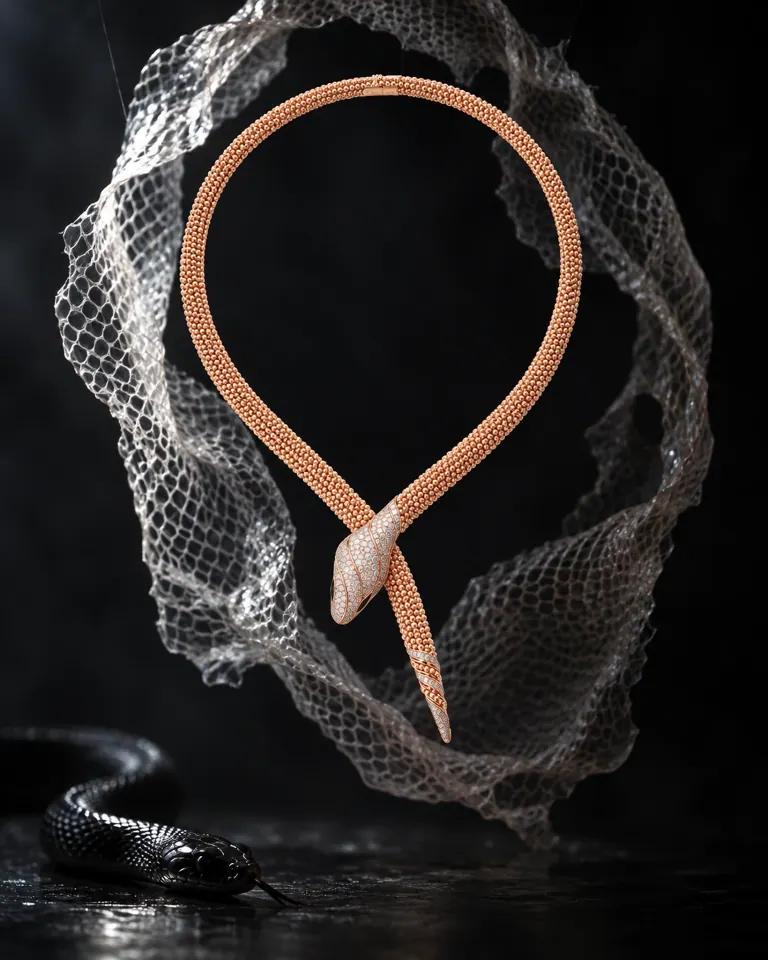
A serpent leaves its skin. The crafted form remains.
Jewellery · Unofficial brand study
View the seriesBrowse by category. Each project page holds the full image series and the thinking behind it.
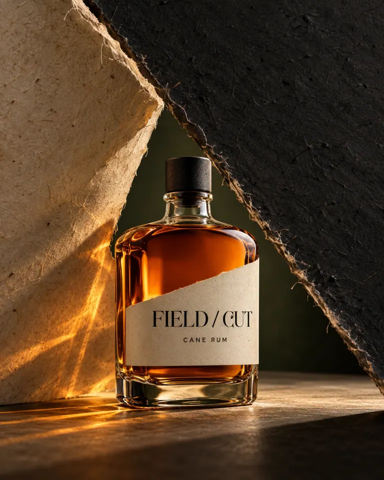
FIELD / CUTA cane spirit built around the decisive angle of a harvest cut.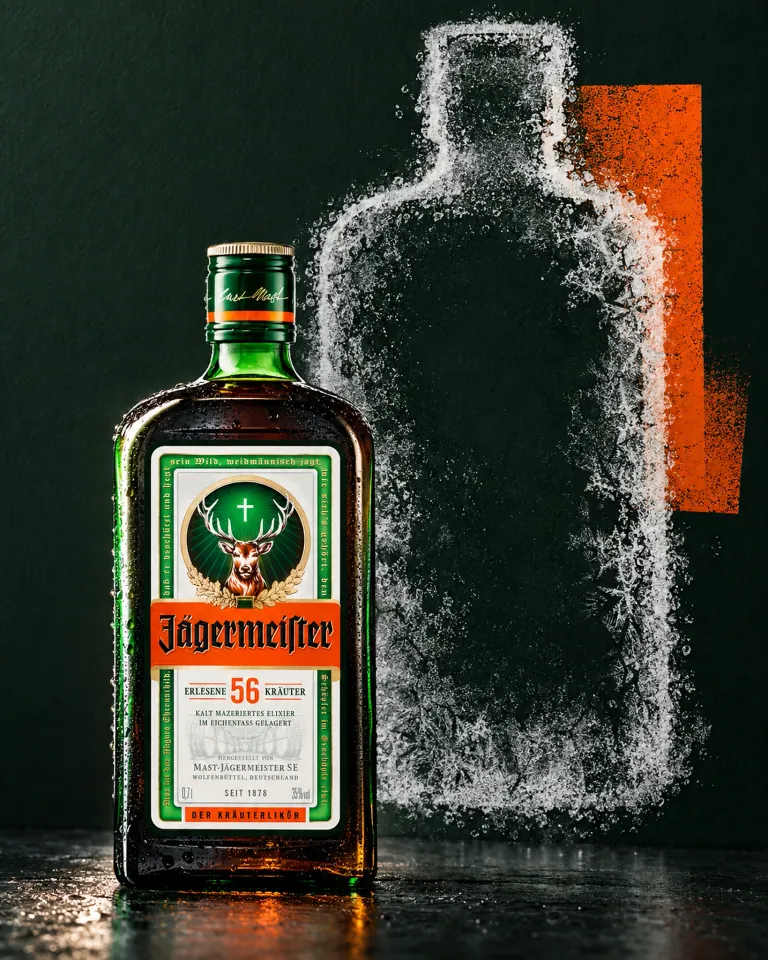
COLD / CONTACTWhat if cold left a temporary print?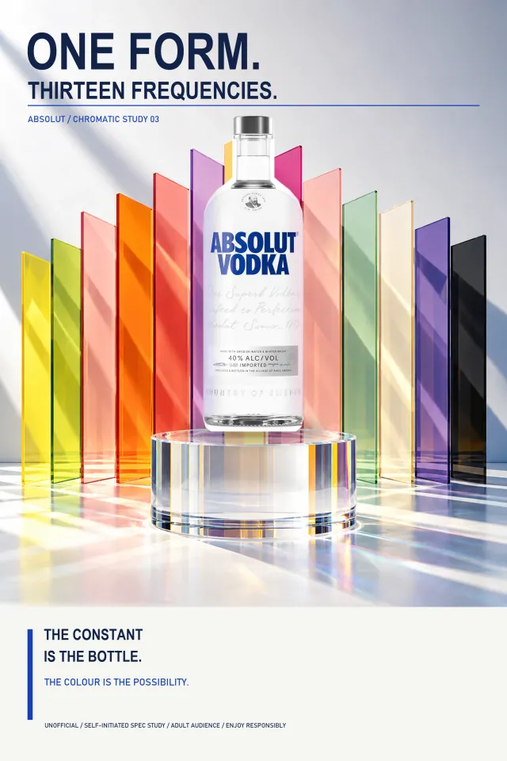
ONE FORM / THIRTEEN FREQUENCIESOne bottle shape, thirteen visual frequencies.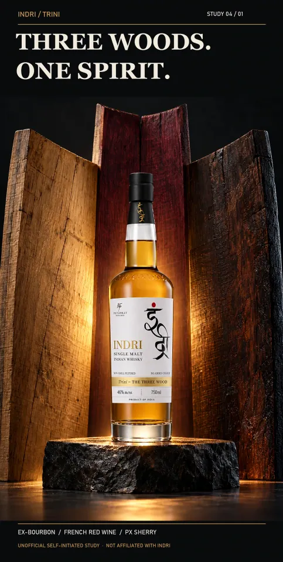
THREE WOODS / ONE SPIRITThree cask histories converge into one whisky.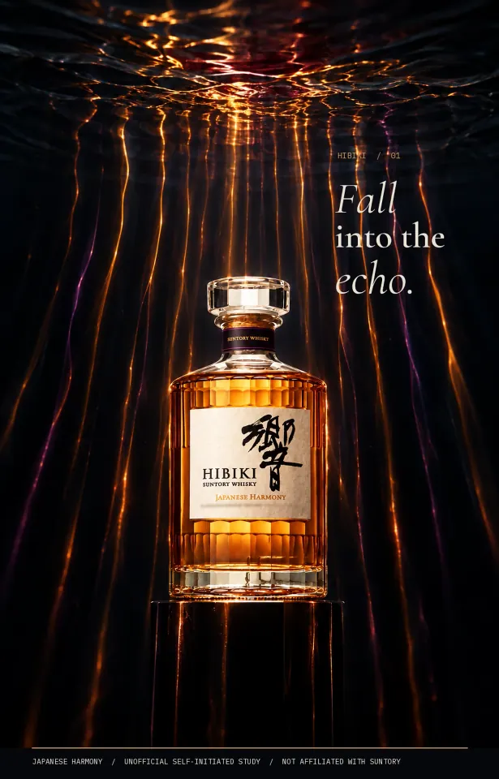
FALL INTO THE ECHOResonance made visible through water, glass and paper.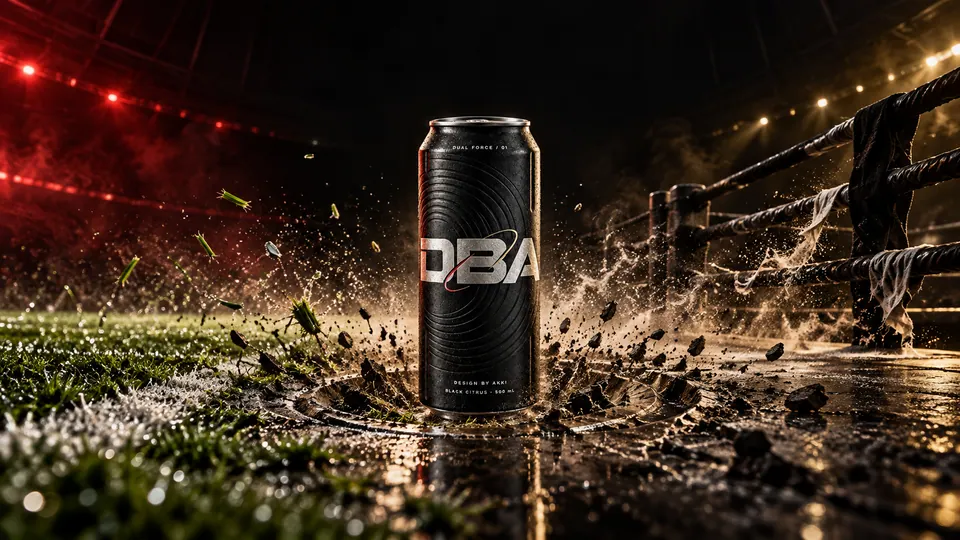
DBA / DUAL FORCEA matte-black performance drink shaped by opposing forces.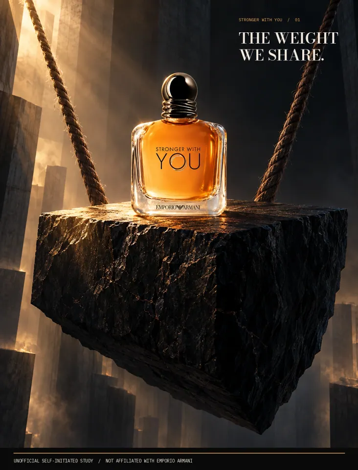
THE WEIGHT WE SHAREStrength as a load carried together.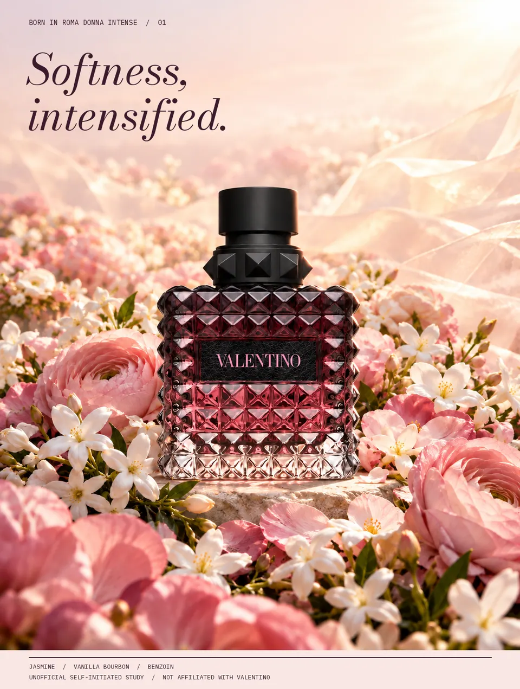
THE SOFT CENTREA hard-edged bottle inside an almost weightless floral world.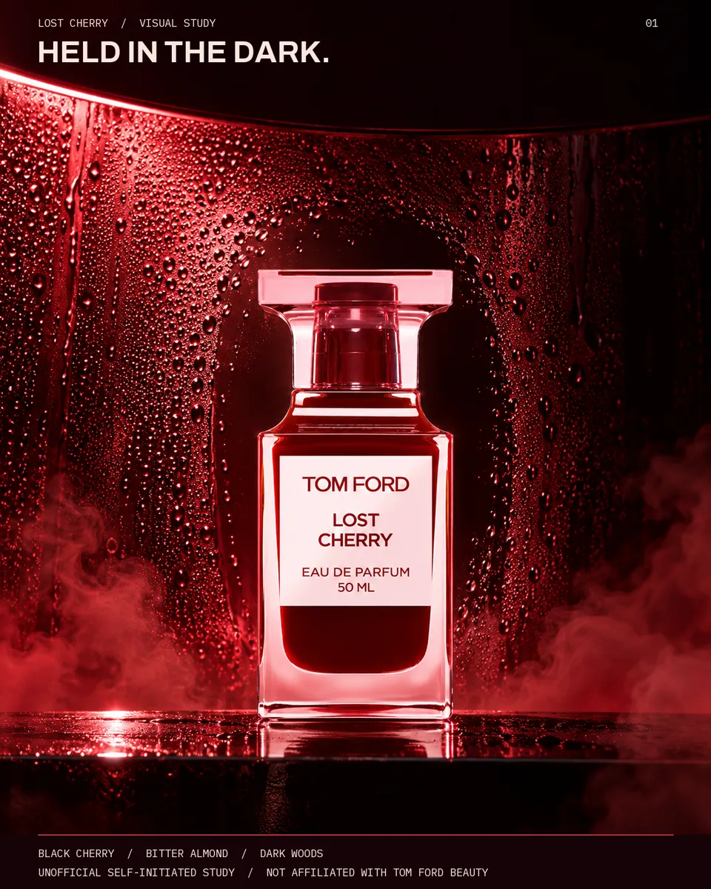
THE PRESSURE CHAMBERSweetness held under pressure, then released.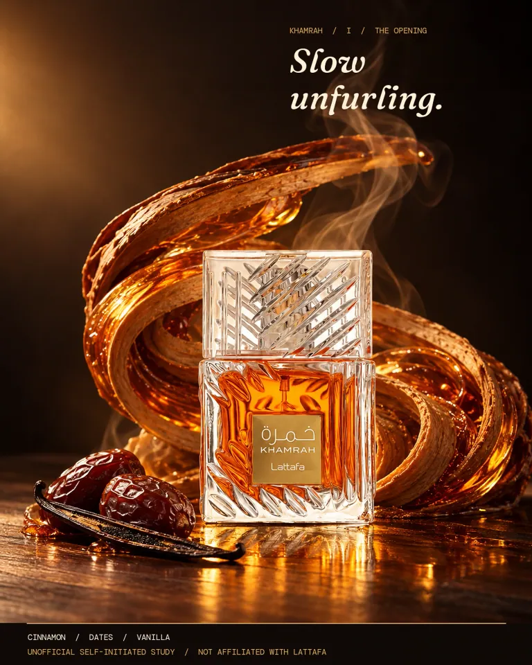
SLOW UNFURLINGWarm spice and woods translated into an unfolding space.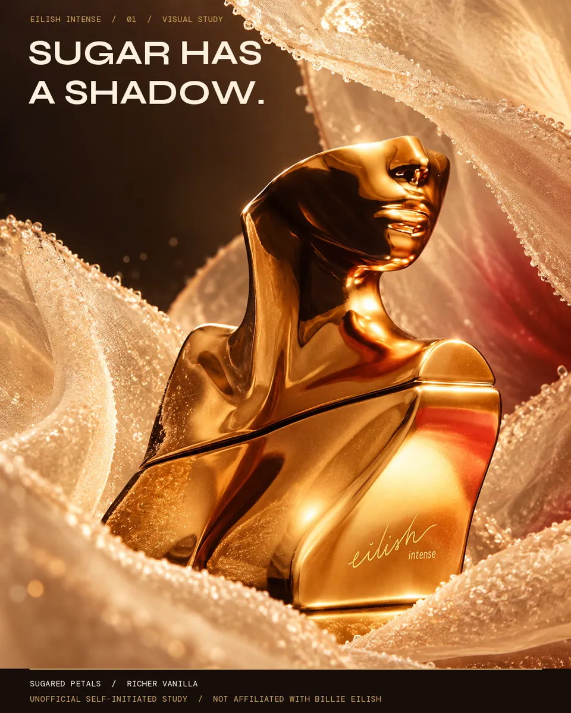
SUGAR HAS A SHADOWPetal sweetness with a deeper afterimage.I build campaign worlds around a material, gesture or visual tension that belongs to the product. The work moves between packaging, still-life direction, typography and digital image-making.
These projects are self-initiated concepts, developed with AI-assisted image production and deliberate art direction. They are not photographs of commissioned shoots, endorsements or finished packaging masters.